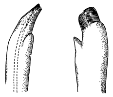

Fiddler Crabs
Uca sindensis
Indus Fiddler Crab
Type
Information
Photos
Video
Art
References
Species List
Type Description
Gelasimus inversus var. sindensis
Alcock, A. (1900) Materials for a carcinological fauna of India No. 6. The Brachyura Catometopa, or Grapsoidea.
Journal of the Asiatic Society of Bengal
64(3. Part 2):279–456.
Information
Subgenus
Paraleptuca
Common Names
Indus Fiddler Crab
Synonyms, Alternate Spellings, & Name Forms
Austruca sindensis
,
Gelasimus inversus
var.
sindensis
,
Gelasmus inversus sindensis
,
Uca (Amphiuca) inversa sindensis
,
Uca (Amphiuca) inversa sindensis
,
Uca (Paraleptuca) sindensis
,
Uca inversa sindensis
,
Uca inversa
subsp.
sindensis
,
Uca inversa
var.
sindensis
,
Uca sindensis
Geographic Range
Indo-West Pacific: Persian Gulf, Gulf of Oman, Pakistan
Download SVG line map of ranges.
Map data derived from:
Collins
et al.
(1984)
;
Crane (1975)
;
Naderloo & Türkay (2012)
External Links
Encyclopedia of Life
Wikipedia
iNaturalist
NCBI Taxonomy Browser/Genbank
GBIF
Photos
No pictures available at this time.
Video
No videos available at this time.
Art

References
Alcock, A. (1900) Materials for a carcinological fauna of India No. 6. The Brachyura Catometopa, or Grapsoidea.
Journal of the Asiatic Society of Bengal
64(3. Part 2):279–456.
Beinlich, B., and H.-O. von Hagen (2006) Materials for a more stable subdivision of the genus
Uca
Leach.
Zoologische Mededelingen
80(4):9–32.
Bott, R. (1973) Die verwandtschaftlichen Beziehungen der
Uca
-Arten (Decapoda: Ocypodidae).
Senckenbergiana biologica
54(4–6):315–325.
Colosi, G. (1924) Crostacei raccolti nella Somalia dalla Missione della R. Società geografica.
Bollettino dei Musei di Zoologia ed Anatomia comparata della R. Università di Torino
39(32):1–4.
Crane, J. (1975)
Fiddler Crabs of the World: Ocypodidae: Genus Uca
. Princeton, NJ: Princeton University Press.
Ismail, N.S., and M.A.E. Ahmed (1993) Macrobenthic invertebrates of mangrove,
Avicennia marina
(Forskal), and of intertidal flats of Khor Kalba, U.A.E., Gulf of Oman. Pp. 155–161 in
Towards the Rational Use of High Salinity Tolerant Plants, Vol. 1: Deliberations about High Salinity Tolerant Plants and Ecosystems
, H. Lieth and A.A. Al Masoom, eds. Dordrecht: Kluwer.
Laurie, R.D. (1915) Reports on the marine biology of the Sudanese Red Sea.—XXI. On the Brachyura.
Journal of the Linnean Society. Zoology
31:407–475.
Lewinsohn, C. (1977) Die Ocypodidae des Roten Meeres (Crustacea Decapoda, Brachyura).
Zoologische Verhandelingen
152:45–84.
Naderloo, R., M. Türkay, and H.-L. Chen (2010) Taxonomic revision of the wide-front fiddler crabs of the
Uca lactea
group (Crustacea: Decapoda: Brachyura: Ocypodidae) in the Indo-West Pacific.
Zootaxa
2500:1–38.
Tesch, J.J. (1918) Decapoda F. Hymenosomidae, Retroplumidae, Ocypodidae, Grapsidae and Gecarcinidae. Pp. 1–148 in
Siboga Expeditie
, Volume 82, Monograph 39c. Leiden: E. J. Brill.
{kind=link}